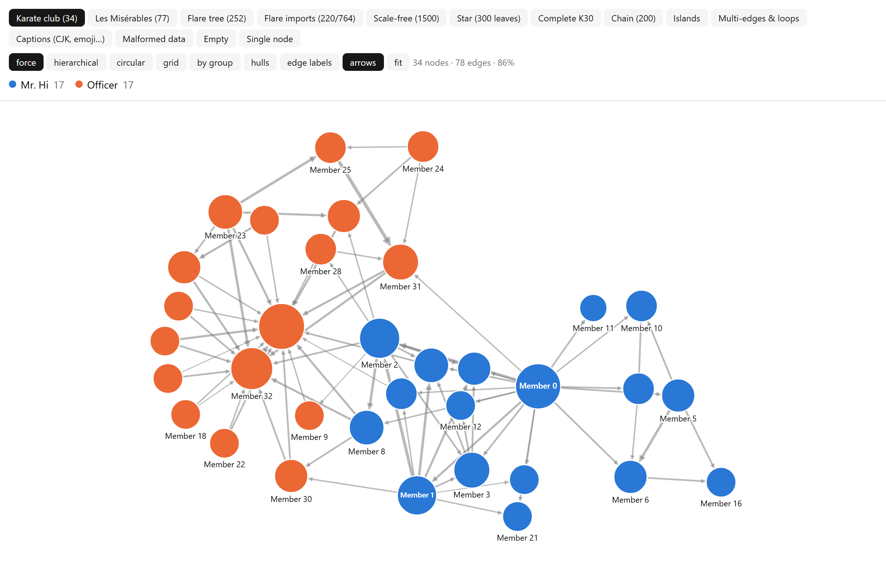

Interactive network graphs, native on every platform.
A TSX component for Native Shell, with an opt-in Rust backend for large graphs. Force-directed, hierarchical, circular and grid layouts, drawn on NSH's native canvas, with pan, zoom, drag, multi-select, pinning and keyboard navigation. No DOM.
Everything a graph explorer needs
The force model and keyboard model come from gpui-graph; the data model, controller and layouts follow Neo4j NVL.
Four layouts, animated
d3-style force with Barnes–Hut, collision, gravity and group clustering. Plus cycle-safe hierarchical (four directions), circular and grid. Switching tweens the nodes.
Touch, mouse and keyboard
Pan, wheel and pinch zoom, drag with optional sticky pins, tap to select, Shift-click or Shift-drag a box to select several, double-tap to expand, context menus. Arrow keys walk the graph.
Careful drawing
Edges batched by state, arrows, curved parallel edges and self loops, edge captions, community hulls, degree-based sizing and label collision culling.
Color-blind-safe palette
Theme tokens for light and dark, and eight hues in a validated, never-cycled order. A category keeps its color when others are filtered out.
Diffed, incremental data
Pass new data and it is merged by id: nodes keep their positions, pins and selection, and new nodes start beside a neighbor.
PNG export & headless use
controller.toImage() renders the whole graph to a PNG. The engine, layouts and renderer are plain TypeScript you can run without the view.
A few lines of TSX
Give it data and a controller. Everything else is optional.
- Reactive controller.
selection(),zoom(),legend()andsettling()are signals. - Imperative handle.
fit,centerOn,select,relayout,setPinned,neighbors,toImage. - Expand on demand.
onNodeActivate+mergeGraphDatagrows the graph in place. - Follows your theme. Colors come from NSH theme tokens, or override any of them.
- Accessible. Keyboard walk, a screen-reader label and Reduce Motion support.
import { mount, signal } from "nsh";
import { GraphView, GraphLegend, createGraphController,
mergeGraphData } from "nsh-graph";
function App() {
const graph = createGraphController();
const data = signal({
nodes: [
{ id: "a", caption: "Alice", category: "Person" },
{ id: "x", caption: "Acme", category: "Company" },
],
edges: [{ from: "a", to: "x", caption: "WORKS_AT" }],
});
return (
<GraphView
data={data()}
controller={graph}
layout="force"
onNodeActivate={async (node) => {
const more = await loadNeighbors(node.id);
data.update((d) => mergeGraphData(d, more));
}}
style={{ flex: 1 }}
/>
);
}
mount(App);Fast where it counts: on QuickJS
NSH runs TSX on QuickJS everywhere except the web. nsh-graph's typed-array quadtree allocates nothing per tick, and its loops are written for an interpreter, so with the same forces it matches d3-force's layout quality at 3.8–8.3× the speed, and it lays out 3–12× faster than AntV G6's layouts. For large graphs, the opt-in Rust backend ticks and draws natively: 5,000 nodes settle in about 2.5 s instead of minutes.
Time to a finished layout
Flare imports, 220 nodes / 764 edges, inside NSH's QuickJS runtime. Lower is better.
WebCola didn't finish within the 120 s budget. On 1,500 nodes nsh-graph finishes in 12 s, d3-force and ForceAtlas2 in 66–96 s, and AntV's layouts not within 120 s. Full method and quality scores in docs/comparison.md.
JS time per frame
Measured headless on QuickJS with nsh test example.
| Graph | Tick | Draw | Settles |
|---|---|---|---|
| Karate club · 34 / 78 | 0.7 ms | 1 ms | 0.2 s |
| Les Misérables · 77 / 254 | 2.1 ms | 2.6 ms | 0.5 s |
| Flare imports · 220 / 764 | 7 ms | 4 ms | 1.9 s |
| Star · 301 / 300 | 10 ms | 5 ms | 2.8 s |
| Scale-free · 1500 / 2997 | 42 ms | 8 ms | 12 s |
A live force layout stays smooth up to a few hundred nodes. Past that, use a static layout or starting positions.
Tested against real and nasty data
Four open datasets and a set of synthetic edge cases, each in every layout. The test suite checks that positions stay finite, everything ends up on screen, and the layout settles.

How it compares
Browser libraries need a DOM, so none of them load inside NSH. nsh-graph is built for it.
| nsh-graph | Cytoscape.js | sigma.js | AntV G6 | d3-force | |
|---|---|---|---|---|---|
| Runs inside NSH | ✓ iOS · Android · desktop · web | ✕ fails to load | ✕ WebGL / DOM | ✕ DOM | ✓ layout only |
| Rendering | Native canvas | Canvas | WebGL | Canvas, SVG, WebGL | none |
| Layouts | force, hierarchical, circular, grid | many (+ ext.) | ForceAtlas2, circular | many | force |
| Accessibility | keyboard, screen reader, reduced motion | none built in | none built in | some keyboard | n/a |
| Dependencies | none (nsh-core for Rust) | none | graphology | @antv/g… | 3 d3 modules |
Honest gaps: no WebGL scale, collapsible groups, lasso selection, node icons or graph algorithms yet. See the roadmap.
Drop a graph into your NSH app
Requires NSH 0.6 or later. nsh add nsh-graph brings the TSX view and its Rust backend; the app builds with the Rust toolchain.